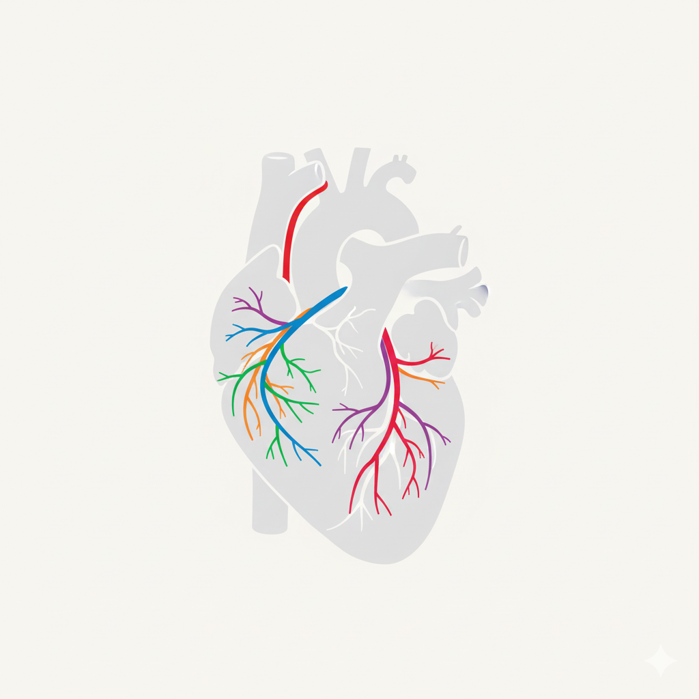

Diagrama Coronario
Instrucciones: Haz clic en una ubicación del diagrama para añadir un nuevo hallazgo de lesión.

Herramienta para el reporte gráfico de lesiones coronarias basado en CAD-RADS™ 2.0
Instrucciones: Haz clic en una ubicación del diagrama para añadir un nuevo hallazgo de lesión.
Aún no se han añadido hallazgos.